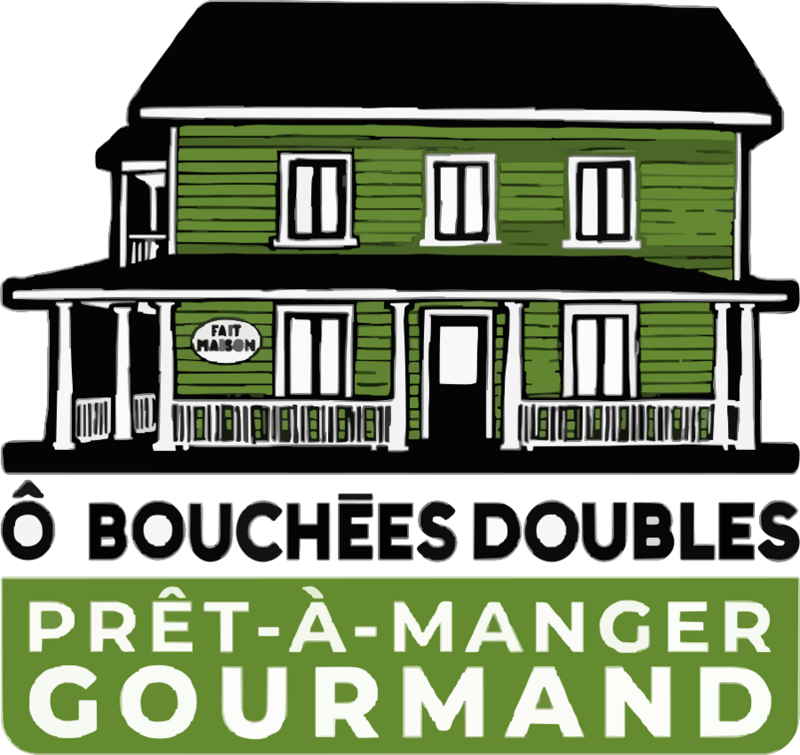
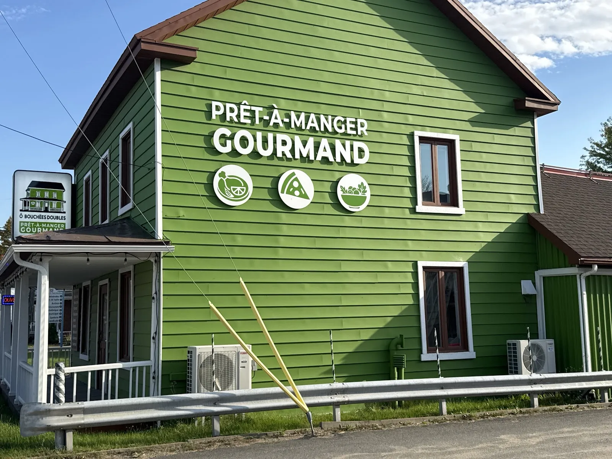

Une cuisine savoureuse et faite maison pour les gens pressés : plats préparés, mets à réchauffer et produits d'épicerie fine, avec une belle place aux produits régionaux.

« Arrêt très heureux au hasard de notre route. La patronne est adorable et prend le temps de discuter et présenter ses plats. Tout est fait maison, très bon. Nous avons mangé sur place, dehors il y a des tables et avons pris des salades à emporter. On ne peut que recommander. »
« Mets délicieux à emporter, de nouveaux mets chaque semaine, produits congelés. Fraîcheur, saveurs et qualité. Service impeccable et courtois. »
« La nouvelle épicerie est magnifique. Beaucoup de bons produits et un très grand choix de produits régionaux. Fraîcheur et qualité, en plus d'un accueil chaleureux. »
« Véritable coup de coeur! Ô Bouchées Doubles nous régale avec leurs plats préparés absolument délicieux (le porc à la moutarde… un vrai délice 😍) et leurs produits d’épicerie raffinés comme la confiture poire-vanille ou encore le miel à la framboise 🍯🍐 »